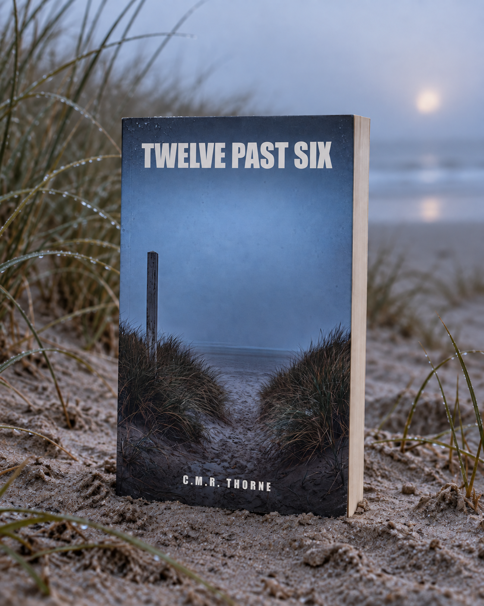

Twelve Past Six
A Thriller
His watch recorded the last heartbeat. The heart in that graph doesn't beat like Bram's.
Where to buy
Iris Havik knows the hearts of her village better than their faces. In Duinhoef, on the Dutch coast, people know their resting heart rate to the beat – and not their neighbor's name. As the village's cardiac rehab therapist, Iris reads the people who run beside her every morning: recovery, bad nights, who starts too fast, who's hiding something.
On a Thursday morning in October, Bram Selier is found dead in the dunes. His watch has written it all down, nice and neat: the final run, the heartbeat that stops at twelve past six. A tidy death, they say. The whole village believes it.
Iris doesn't. The heart in that graph doesn't beat like Bram's. Did someone tamper with the data? Was he even wearing his own watch that morning? She's the only one who can ask those questions – and she's starting to understand what asking them out loud will cost her.
Some hearts don't lie. People do.
Product details
- Publisher
- Lowlands Press
- Language
- English
- Published
- 2026-09-04
- Pages (Paperback)
- 371
- Pages (Hardcover)
- 287
- Words
- 86.550
- ASIN (Ebook)
- B0HHRKL657
- ASIN (Paperback)
- B0HHSFJX9V
- ASIN (Hardcover)
- B0HHX65P1C
- ISBN (Paperback)
- 979-8171856984
- ISBN (Hardcover)
- 979-8171943141
Read the opening
The opening of the book, the same pages a store lets you look inside. Read on at any of the stores above.
Prologue
March 4, 2019
The monitor above the bed keeps count for him. That's the only thing Hugo Prins still likes about this room: someone – something – is keeping track of the fact that he's still here. Beep. Beep. A blip that shoots up and falls back, up and back, three nights running now, and as long as the blip dances, he dances with it.
It's a little after three. He doesn't know that from a clock; the clock hangs behind his head, and turning his head costs more than it's worth. He knows it from the hospital itself, which holds its breath around this hour. No carts in the hall. No voices. Only the hum of the machines and, somewhere far off, a door standing ajar and ticking against its own frame.
His chest feels strange. Not the pain from two days ago, which lay around his ribs like a hand and squeezed. This is different: a fluttering, as if a bird has flown in between his ribs and can't find the way out. He lays his flat hand over it, the way his mother used to when he couldn't sleep, and feels it going wild under his palm – too fast, too light, as if his heart suddenly belongs to somebody else.
Above his head the sound changes.
The beep becomes a tone. A held, urgent tone, and the blip on the screen – he can't see it, but he doesn't need to see it, he can hear it in the way the tone keeps going now – the blip isn't a mountain anymore, it's a shiver, the handwriting of someone shaking. Somebody's coming, he thinks. That's how it works here. You make a sound and somebody comes. That's the arrangement. That's what they're lying here for.
He waits.
Footsteps in the hall – fast, several pairs, the drumming of people running toward something – and for a second something like relief rises in him, they're coming, and then the drumming goes past his door and on down the hall, to a room two doors along, where somebody else is calling louder tonight than he is. Another door bangs open. Voices, short and hard and full of direction. Somebody calls a name that isn't his.
The tone above his head holds.
And then, with no warning, it stops.
Not because things are better. Hugo knows that, with the last clear thought he will ever have – the thought of a man who ran machines his whole life and knows that a machine gone quiet is not the same as a machine that's satisfied. Somebody took the sound away. Somewhere, at a desk he can't see, a hand went to a button and silenced the alarm – I'll be right back, that hand will have thought, and then that hand was needed somewhere else, with the name that called louder.
It's all right, he wants to say. Go on. I'll wait.
But the bird in his chest can't find the way out, and the room is very quiet now, and the quiet is the worst of it – worse than the pain, worse than the fear – because the quiet means nobody is keeping count of whether he's still here.
Beep, he thinks. Please. One more time.
The monitor doesn't count along anymore.
At 3:53 a.m. somebody comes back into the room. She stands in the doorway a beat too long, her hand still on the handle, and in that beat something happens in her face that nobody sees and that she will carry with her the rest of her life. Then she does what she was trained to do. She calls for help. She starts. It's too late, and somewhere between the second and the third compression she knows it's too late, and she keeps going, long after going on means anything at all.
Much later, when the room is quiet again and other people have cleaned up what there is to clean up, there is one line in the system about this night. Alarm acknowledged, 03:11. User: the unit's shared night account. Nothing else. No name. No reason.
A blip that stopped dancing, and a hand that took the sound away, and nobody who ever wrote down that those two things were the same night.
Chapter 1
Iris Havik knew the hearts of her village better than their faces.
She stood in the fog that morning at the path up to the beach, by the wooden sign that said DUINHOEF and underneath, smaller, WELCOME – the same fog that hung there every October morning, salt and thick, so that the dunes didn't begin until ten meters out and the sea not at all – and she watched thirteen people stretching as if they knew what they were doing. Most of them didn't. That was the nice part. They stretched the wrong muscles, breathed too high, and would go out too fast in a minute, because the first kilometer always feels like something you could keep up forever. Iris loved them the way you love something you're responsible for.
On every wrist the same dark Apple Watch Ultra. That was Duinhoef: a village where people knew their resting heart rate down to the beat and didn't know their neighbor's name. They'd bought the watches to get better – faster, leaner, longer-lived – and they'd found Iris because a watch tells you what is happening but not what to do about it. That was her job. Two mornings a week the running group, the rest of the time the practice on the Vuurtorenweg, where she taught people after a heart attack to trust a heart that had let them down once. Havik – Hart & Beweging – Heart & Movement, and she'd come up with it herself, and still found it a shade too cheerful for what she actually did, which came down to one thing: paying attention. Someone had to pay attention.
"Easy on the first one," she said, the way she said it every time. "The clock isn't counting this morning."
That was a lie, and all of them knew it, because the clock was always counting. At the end of the run they'd stand in the parking lot and look at their wrists and read the number out to each other like report cards. But the lie was part of it, like the fog and the sign and the sea that was there and wouldn't show itself.
"Iris."
She turned around. Bram Selier came up the path, late as always, with the loose stride of a big man who never had to learn how to take up space. Forty-eight, wide shoulders, a face that laughed faster than it thought – the man the whole village was a little in love with. Contractor. He'd built the dormer on Iris's neighbor's house the year before and taken three weeks longer than agreed, and the neighbor still talked about him as if he'd saved her life. That was Bram. You couldn't get angry at him. Anger slid off him, and somehow it ended up being your fault for trying.
"You're late," she said.
"I'm on time for the last five. That's more efficient." He tapped his watch and made a face. "It told me I slept badly last night. Thirty-four percent deep sleep or something. Like that thing knows what I need."
"It knows exactly what you need," Iris said. "You just don't listen."
He grinned, but there was something – there had been something more often these last weeks, a fraction of a second in which the laugh came up first and only then reached his face, as if there was a station along the way where it stopped for a moment. She'd seen it and pushed it aside the way you push things aside with people you love – by not looking at it a second time.
"You running today, or measuring?" he asked.
"Measuring." She held up her phone, where fourteen small hearts were beating in a grid, fourteen names, fourteen lines that would start crawling upward in a minute and of which she alone would see which ones were going too fast. "Somebody has to protect you from yourselves."
"You're good at that," Bram said.
It was an ordinary thing to say. The kind of thing people say a hundred times a day in a village where everybody likes everybody. But he said it with that half-station in it, with his eyes on her a beat too long, and Iris felt something run down her back that she couldn't place and so pushed that aside too.
"Go run," she said.
So he ran. He took his place at the back of the group, where he always ran – not because he couldn't go faster, but because he liked having the overview – and then the whole knot of them moved off into the fog, fourteen people and fourteen watches and a collection of secrets of which Iris that morning knew exactly one, and that one was hers.
She watched them until the fog took them in. First the front runners, then the middle, then Bram – his wide back, the red stripe on his shoes, the arm swinging in time with his stride, and on the wrist the watch that wrote everything down. That watch would sit on that wrist for eight more days. On the ninth morning it would tell a lie so beautifully consistent that a whole village would believe it – a whole village except one woman, who knew the hearts better than the faces.
She put her phone in her coat pocket, blew into her hands against the cold, and looked at the place in the fog where Bram Selier had just disappeared as if the sea had swallowed him.